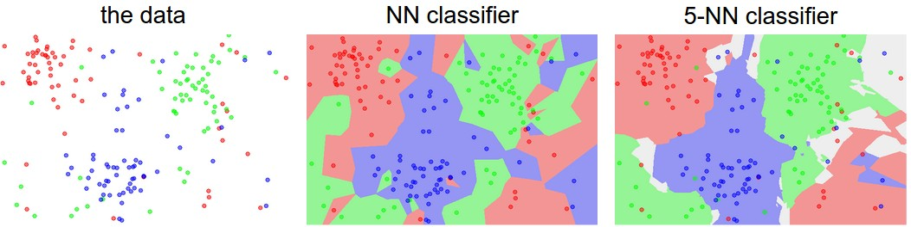

阅读信息
约 0 个字 4 分钟
CS231n: Deep Learning for Computer Vision
Stanford - Spring 2025
Image Classification
Ways to compare images
- L1 distances: \(d_1(I_1, I_2) = \sum_p \vert I_1^p - I_2^p \vert\)
- L2 distances: \(d_2(I_1, I_2) = \sqrt{\sum_p ( I_1^p - I_2^p )^2}\)
A classifier below with \(O(1)\) for training and \(O(N)\) for predecting with L1 distance.
It's bad: we want classifiers that are fast at prediction and slow for training
K-Neatest Neighbours
The idea is very simple: instead of finding the single closest image in the training set, we will find the top k closest images, and have them vote on the label of the test image. Higher values of k have a smoothing effect that makes the classifier more resistant to outliers

Ideas on the hyperparameters - ❌ Choose hyperparameters working best on the data. K = 1 always works best on the training data. - ❌ Choose hyperparameters working best on the test data. No idea how it will perform on new data.
Whenever you’re designing Machine Learning algorithms, you should think of the test set as a very precious resource that should ideally never be touched until one time at the very end.
- Split data into train, validation, test sets, train and test on train and validation sets and showcase the performance on the test set. (Test at the last time.)
- Cross-Validation (use less on CV). Split data into folds, try each fold as validation and average the results.
For example, in 5-fold cross-validation, we would split the training data into 5 equal folds, use 4 of them for training, and 1 for validation. We would then iterate over which fold is the validation fold, evaluate the performance, and finally average the performance across the different folds.
Tip
In practice, people prefer to avoid cross-validation in favor of having a single validation split, since cross-validation can be computationally expensive.
K-Nearest Neighbor on images never used: very slow at test time, and distance matrix on pixels are not informative. And our classifier should densely cover the space, which is harder when the dimension goes high. (Curse of dimensionality)
Parametric Approach
e.g.
- Hard cases: Cases with no linear boundaries.